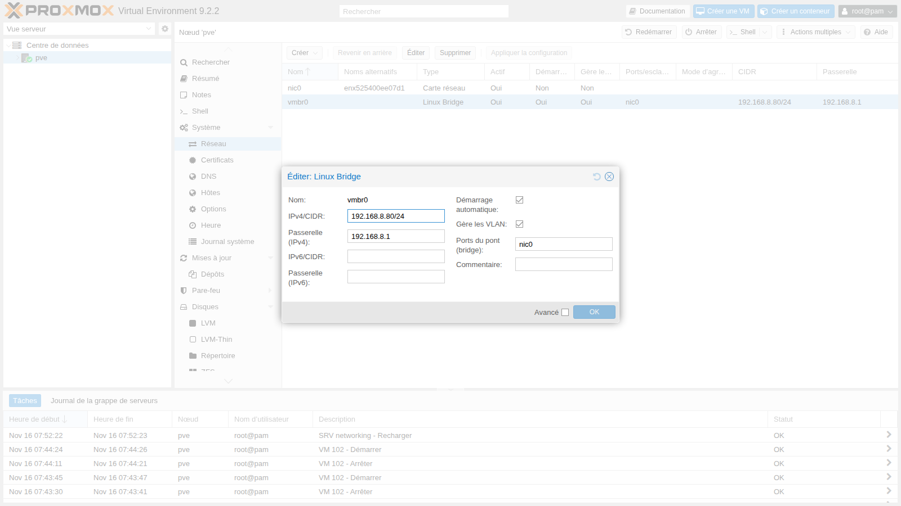

Réseau virtuel, SDN et NFV¶
Résumé
Le jour 2 a fait construire un réseau virtuel avec Workstation : commutateurs VMnet, réseau isolé, VM routeur. Cette partie présente les technologies réseau des plateformes de production : les commutateurs virtuels des grands hyperviseurs, les VLAN qui séparent plusieurs réseaux sur les mêmes câbles, VXLAN pour aller au-delà, le réseau défini par logiciel (SDN) et la virtualisation des fonctions réseau (NFV).
Le TP active les VLAN sur le commutateur virtuel de Proxmox VE et montre, avec trois machines branchées sur le même pont, que seules celles du même VLAN peuvent se parler.
| Propriété | Valeur |
|---|---|
| Difficulté | Intermédiaire |
| Durée estimée | 2 h |
| Version décrite | Proxmox VE 9.2 |
| Place dans le parcours | Partie 13 sur 17 du parcours Virtualisation — jour 4 |
| Dernière mise à jour | 2026-11-16 |
Convention de lecture
🖥️ PC hôte · 🌐 interface web ou Shell de Proxmox (pve) · ✍️ exercice · 🛟 instantané.
1. Les commutateurs virtuels en production¶
Au jour 2, les réseaux VMnet de Workstation ont fait découvrir le commutateur virtuel. Sur les hyperviseurs de production, on retrouve le même principe, avec plus de fonctions :
| Hyperviseur | Commutateur virtuel | Particularité |
|---|---|---|
| VMware ESXi | vSwitch standard | Configuré hôte par hôte |
| VMware vSphere | vSphere Distributed Switch (vDS) | Configuré une fois dans vCenter, identique sur tous les hôtes du cluster : indispensable pour qu'une VM garde son réseau en migration à chaud |
| Microsoft Hyper-V | Commutateur virtuel Hyper-V | Trois types : externe (relié à une carte physique), interne (VM et hôte), privé (VM seulement) — l'équivalent du pont, du réseau privé hôte et d'un VMnet isolé |
| Proxmox VE, KVM | Pont Linux (Linux bridge, vmbr0…) ou Open vSwitch |
Le pont vmbr0 est créé à l'installation, relié à la carte physique |
Open vSwitch est un commutateur virtuel libre, hébergé par la Linux Foundation, utilisé par de nombreuses plateformes (Proxmox VE en option, OpenStack) pour les fonctions avancées.
2. Les VLAN : plusieurs réseaux sur les mêmes câbles¶
Un VLAN (Virtual LAN, réseau local virtuel) découpe un réseau physique en plusieurs réseaux logiques, isolés les uns des autres, sans câbles supplémentaires. La norme IEEE 802.1Q ajoute à chaque trame Ethernet une étiquette (tag) qui contient le numéro du VLAN, codé sur 12 bits : 4 094 VLAN utilisables (les valeurs 0 et 4 095 sont réservées).
| Terme | Signification |
|---|---|
| Port d'accès (access) | Port qui appartient à un seul VLAN ; l'appareil branché ne voit pas d'étiquette (un PC, une imprimante) |
| Port d'agrégation (trunk) | Port qui transporte plusieurs VLAN, chaque trame portant son étiquette (lien entre commutateurs, ou vers un hyperviseur) |
| Étiquette (tag) | Le numéro de VLAN ajouté à la trame |
Dans un hyperviseur, la carte physique de l'hôte est branchée sur un port trunk du commutateur de la salle. Le commutateur virtuel lit les étiquettes et distribue chaque trame à la bonne VM : on donne simplement à chaque carte virtuelle un numéro de VLAN. C'est ainsi qu'on sépare, sur les mêmes hôtes, les VM des serveurs, de la DMZ, de l'administration et du stockage.
Et pour aller au-delà de 4 094 réseaux ?
Un fournisseur de cloud qui héberge des milliers de clients manque vite de VLAN. VXLAN (Virtual eXtensible LAN, RFC 7348) transporte les trames Ethernet à l'intérieur de paquets UDP/IP : les réseaux virtuels traversent n'importe quel réseau IP, même entre plusieurs salles. L'identifiant de réseau est codé sur 24 bits, soit environ 16 millions de réseaux possibles.
3. Le réseau défini par logiciel (SDN)¶
Un équipement réseau classique fait deux métiers : il décide où envoyer les paquets (le plan de contrôle : tables de routage, protocoles) et il les envoie (le plan de données). Le SDN (Software-Defined Networking) sépare ces deux plans : un contrôleur central, logiciel, décide pour tout le réseau, et programme les commutateurs (physiques ou virtuels) qui se contentent d'exécuter.
| Avantage | Exemple |
|---|---|
| Créer un réseau en quelques secondes, par logiciel ou par script | Un nouveau client d'un cloud reçoit ses réseaux isolés automatiquement |
| Une configuration centrale et cohérente | Un même réseau virtuel sur tous les hôtes, sans configurer chaque commutateur |
| Une sécurité fine | Micro-segmentation : des règles de pare-feu au niveau de chaque VM |
Produits : VMware NSX, Cisco ACI, les réseaux virtuels des clouds publics (VPC chez AWS, VNet chez Azure), et, dans Proxmox VE, le module SDN (installé par défaut depuis la version 8.1), qui crée des zones (Simple, VLAN, QinQ, VXLAN, EVPN) et des réseaux virtuels (VNet) pour tout un cluster.
4. La virtualisation des fonctions réseau (NFV)¶
La NFV (Network Functions Virtualization) remplace les boîtiers réseau spécialisés (routeur, pare-feu, répartiteur de charge, cœur de réseau mobile) par des logiciels qui tournent sur des serveurs standards : dans des VM (VNF, Virtual Network Function) ou des conteneurs (CNF). L'idée a été lancée en 2012 par un groupe de grands opérateurs de télécommunications, dans le cadre de l'organisme de normalisation européen ETSI.
Exemples à portée de main :
- le routeur Debian de la partie 6 : une fonction de routage et de NAT dans une VM ;
- un pare-feu pfSense ou OPNsense en VM, comme dans le parcours pfSense ;
- des routeurs virtuels (VyOS, routeurs virtuels des grands constructeurs), des répartiteurs de charge logiciels ;
- le cœur des réseaux 5G, entièrement logiciel.
Avantages : déploiement en minutes au lieu de semaines, matériel standard moins cher, haute disponibilité et sauvegarde des fonctions réseau comme n'importe quelle VM. Limites : performances à surveiller (un pare-feu logiciel doit traiter des millions de paquets), et dépendance à la plateforme de virtualisation.
4.1 ✍️ Exercice : quelle technologie ?¶
- Une entreprise veut séparer, sur ses trois hôtes Proxmox VE, les VM des serveurs, de la DMZ et de l'administration, sans acheter de nouveaux commutateurs.
- Un hébergeur doit offrir à 20 000 clients chacun plusieurs réseaux privés isolés.
- Un opérateur veut déployer un pare-feu pour un nouveau client en dix minutes, sans livrer de boîtier.
- Sur VMware vSphere, une VM doit garder exactement la même configuration réseau après une migration à chaud vers un autre hôte.
Corrigé
- Des VLAN : le port du commutateur physique vers chaque hôte passe en trunk, le pont des hôtes devient « VLAN aware », et chaque carte virtuelle reçoit son numéro de VLAN.
- VXLAN (ou un SDN qui l'utilise) : 4 094 VLAN ne suffisent pas, VXLAN offre environ 16 millions de réseaux.
- La NFV : un pare-feu virtuel (VNF) déployé dans une VM ou un conteneur, à partir d'un modèle.
- Un commutateur distribué (vSphere Distributed Switch) : configuré une seule fois dans vCenter, identique sur tous les hôtes.
5. TP : des VLAN dans Proxmox VE¶
On utilise les trois machines créées aux parties 10 et 11, toutes branchées sur le même pont vmbr0. 🖥️ Démarrer d'abord stockage : depuis la partie 12, le disque de la VM 102 y est rangé.
| Machine | Adresse | VLAN à lui donner |
|---|---|---|
Conteneur 201 ct-debian |
192.168.x.85 |
10 |
VM 102 virtio |
192.168.x.82 |
10 |
VM 101 emulee |
192.168.x.81 |
20 |
5.1 Rendre le pont « VLAN aware »¶
- 🖥️ Démarrer
pve. 🌐 Ouvrir pve > Système > Réseau, sélectionner vmbr0, puis Éditer. -
Cocher Gère les VLAN (VLAN aware), puis OK.

La case Gère les VLAN transforme le pont en commutateur qui comprend les étiquettes 802.1Q
-
Cliquer sur Appliquer la configuration. L'accès à l'interface web n'est pas coupé :
vmbr0lui-même reste dans le réseau non étiqueté.
5.2 Étiqueter les cartes réseau¶
- 🌐 Démarrer le conteneur 201 et les VM 101 et 102.
- 🌐 Pour la VM 102 : Matériel, sélectionner Carte réseau (net0), Éditer, saisir Étiquette de VLAN
10, puis OK. Faire de même pour la VM 101 avec l'étiquette20. - 🌐 Pour le conteneur 201 : Réseau, sélectionner eth0, Éditer, Étiquette de VLAN
10, puis OK. -
🌐 Attendre une dizaine de secondes après les changements d'étiquette : le temps que les machines et le pont réapprennent qui est où. Puis, dans pve > Shell, vérifier l'étiquette posée sur chaque port du pont :
5.3 Tester¶
🌐 Dans pve > Shell, faire pinguer chaque machine depuis le conteneur 201 (VLAN 10) :
pct exec 201 -- ping -c 3 192.168.x.82 # VM 102, VLAN 10
pct exec 201 -- ping -c 3 192.168.x.81 # VM 101, VLAN 20
pct exec 201 -- ping -c 3 192.168.x.2 # passerelle de VMnet8, sans VLAN
Vérifier son lab
bridge vlan showaffiche10 PVID Egress Untaggedpourtap102i0etveth201i0, et20 PVID Egress Untaggedpourtap101i0: chaque port du pont appartient à son VLAN, comme un port d'accès d'un commutateur physique.- Le ping vers la VM 102 (même VLAN) répond : 0 % de perte. S'il échoue juste après le changement d'étiquette, attendre quelques secondes et le relancer.
- Le ping vers la VM 101 (VLAN 20) échoue : 100 % de perte, alors que les deux machines sont sur le même pont, dans le même sous-réseau IP.
- Le ping vers la passerelle échoue aussi : la passerelle de VMnet8 n'est dans aucun VLAN. Pour sortir, un VLAN a besoin de son routeur (ou d'un pare-feu avec une interface dans ce VLAN).
✍️ Que se passe-t-il si l'on met la VM 101 dans le VLAN 10 ?
Elle peut de nouveau communiquer avec le conteneur 201 et la VM 102 (essai fait : 5 pings sur 5 répondent après le changement d'étiquette). Le VLAN est une frontière logique, que l'on déplace par logiciel en quelques secondes : c'est toute la souplesse du réseau virtualisé, et aussi la raison de bien protéger l'accès à l'interface de l'hyperviseur.
5.4 Remettre en état¶
🌐 Retirer les étiquettes de VLAN des trois machines (champ Étiquette de VLAN vide), pour qu'elles retrouvent l'accès à Internet, puis les éteindre. Laisser Gère les VLAN coché : sans étiquette, une carte reste dans le réseau non étiqueté. 🛟 🖥️ Éteindre pve et prendre l'instantané 03-pve-vlan.
6. Questions de révision¶
- Quelle est la différence entre un vSwitch standard et un commutateur distribué (vDS) chez VMware ?
- Combien de VLAN la norme 802.1Q permet-elle ? Pourquoi ?
- Quelle est la différence entre un port d'accès et un port trunk ?
- Que sépare le SDN ? Citer un avantage.
- Qu'est-ce que la NFV ? Donner deux exemples de VNF.
- Dans le TP, pourquoi le conteneur 201 (VLAN 10) ne peut-il plus joindre la passerelle ?
Corrigé
- Le vSwitch standard se configure hôte par hôte ; le commutateur distribué se configure une fois dans vCenter et s'applique à tous les hôtes du cluster, ce qui garantit qu'une VM retrouve le même réseau après une migration à chaud.
- 4 094 : l'identifiant de VLAN est codé sur 12 bits (4 096 valeurs), dont deux sont réservées (0 et 4 095).
- Un port d'accès appartient à un seul VLAN et transmet les trames sans étiquette (pour un poste, une imprimante). Un port trunk transporte plusieurs VLAN, chaque trame portant son étiquette (entre commutateurs, ou vers un hyperviseur).
- Le plan de contrôle (qui décide où vont les paquets) du plan de données (qui les transmet) : un contrôleur central programme les commutateurs. Avantages : création de réseaux par logiciel en quelques secondes, configuration centrale et cohérente, micro-segmentation.
- La virtualisation des fonctions réseau : remplacer des boîtiers spécialisés par des logiciels sur des serveurs standards. Exemples : un pare-feu pfSense ou OPNsense en VM, un routeur virtuel, le cœur de réseau 5G d'un opérateur.
- Parce que la passerelle de VMnet8 se trouve dans le réseau non étiqueté : le pont
vmbr0ne fait pas passer les trames du VLAN 10 vers ce réseau. Il faudrait un routeur avec une interface dans le VLAN 10.
Ressources¶
- Proxmox VE — Configuration réseau — ponts, VLAN, agrégation de liens (en anglais).
- Proxmox VE — Software-Defined Network — zones, VNet et sous-réseaux du SDN de Proxmox (en anglais).
- RFC 7348 — VXLAN — la norme VXLAN (en anglais).
- ETSI — Network Functions Virtualisation — la NFV par l'organisme européen de normalisation (en anglais).
- Partie précédente : Stockage défini par logiciel et hyperconvergence · Partie suivante : Virtualiser les applications et les postes de travail.